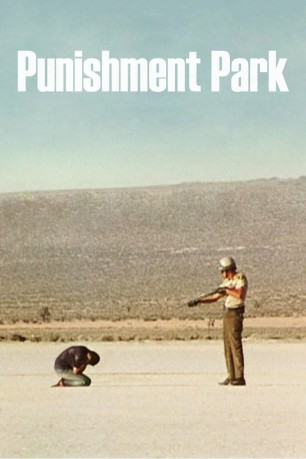

#10948 Strafpark
Alternativ: Punishment Park (Englischer Titel)
 
 IMDB-Wertung: 7.9 / 10
IMDB-Wertung: 7.9 / 10  Metascore: 0
Metascore: 0 
1970. Der Vietnamkonflikt spitzt sich zu. Der Präsident verhängt den Ausnahmezustand und ordnet ein Notstandgesetz an, das erlaubt, “alle in Frage kommenden Personen, die die innere Sicherheit gefährden könnten”, festzunehmen. In einer Wüstenzone südlich von Kalifornien tagt ein Gericht, die Verurteilten müssen durch die Wüste fliehen, ohne von der bewaffneten Polizei eingeholt zu werden…
Jahr: 1971
Dauer: 91 Minuten
FSK: 16
Land: USA Studio: SherpixTonspuren:
Untertitel:
Auflösung: 1080p (1440x1080) Größe: 10055 MB
Genre: Thriller, Drama
Regisseur: Peter Watkins
Drehbuch: Peter Watkins
Soundtrack: Paul Motian
Darsteller:
 Carmen Argenziano als Jay Kaufman, Tribunal Defendant
Carmen Argenziano als Jay Kaufman, Tribunal Defendant- Scott Turner als James Arthur Kohler, Tribunal Defendant
- John Kerry als Policeman
- Patrick Boland als First Tribunal Defendant
- Kent Foreman als Defendant in the tribunal
- Luke Johnson als Defendant in the tribunal
- Katherine Quittner als Nancy Smith
- Stan Armsted als Charles Robbins
- Mary Ellen Kleinhall als Allison Mitchner
- Mark Keats als William C. Hoeger, Tribunal Chairman
- Gladys Golden als Mary Jurgens, Tribunal Member
- Sanford Golden als Sen. Harris
- George Gregory als Mr. Keagan
- Norman Sinclair als Alfred J. Sully - Tribunal Member
- Sigmund Rich als Prof. Hazlett
- Paul Rosenstein als Paul Reynolds - Tribunal Member
- Lee Marks als Robert J. Donovan, FBI Agent
- Sandy Cox als Stenographer
- Fred Franklyn als James Daly, Defense Attorney
- Ross Briegleb als Tribunal Doctor
- Joe Hudgins als Chief Tribunal Marshall
- Radger Greene als Federal Marshall
- Tom Kemp als Tribunal Marshall
- Harry McKasson als Tribunal Marshall
- Harold Beaulieu als Desert Militant
- Cynthia Jenkins als Desert Militant
- Jack London als Desert Militant
- Bob Lewine als Desert Militant
- Rolando González als Desert Semi-Militant
- Viola Gonzalez als Desert Semi-Militant
- Jack Gozdick als Desert Semi-Militant
- Brian Hart als Desert Semi-Militant
- Linda Mandel als Desert Semi-Militant
- Don Pino als Desert Semi-Militant
- Jason Sunners als Desert Semi-Militant
- Conchita Thornston als Desert Semi-Militant
- Gary Johnson als Desert Pacifist
- Michelle Johnson als Desert Pacifist
- Ted Martin als Desert Pacifist
- Don McDonald als Desert Pacifist
- Harold Schneider als Desert Pacifist
- Jim Bohan als Captain, Sheriff's Dept.
- Van Daniels als Member, Sheriff's Dept.
- Harlan Green als Member, Sheriff's Dept.
- Dennis Wilson als Sheriff's dept.
- Paul Alelyanes als Policeman
- Kerry Cannon als Policeman
- Bob Franklin als Policeman
- Bruce McGuire als Policeman
- Ron Pennington als Policeman
Datei: X:\1971\Strafpark (1971, FSK16, 1440x1080).mkv seit 08.04.2019
Festplatte: HD 1971-1979
 Es gibt insgesamt 28 Filme in der Gruppe '1971'
Es gibt insgesamt 28 Filme in der Gruppe '1971'